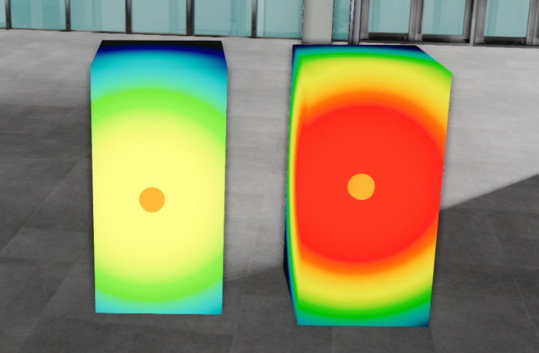

열원 객체
목차
열원(Heat Resource) 객체는 특정 지점의 열이 주변 객체에 어떻게 퍼지는지를 색으로 표현하는 분석 객체입니다. 열원 자체는 구체(U3dSphere) 형태로 그려지고, 열 분포는 열원에 등록한 대상 객체의 표면에 표시됩니다.
- 열원(heat resource): 온도를 가진 발열 지점입니다.
U3dHeatGeometry한 개가 열원 한 개에 해당합니다.- 대상(target): 열 영향을 받아 표면 색이 바뀌는 객체입니다. 열원에 직접 등록해야 합니다.
- 범위(buffer)와 배율(outerFactor): 열이 100% 전달되는 기본 반경과, 그 반경을 확장해 서서히 약해지는 감쇠 구간의 배율입니다.
1. 열원 생성하기
U3dHeatGeometry 생성자로 열원을 만들고, U3dVectorLayer.addGeometry로 레이어에 등록하면 화면에 표시됩니다.
레이어를 만들고 도형을 등록·제거하는 방법은 3D Geometry 시작하기 - 도형 등록하고 제거하기에서 설명합니다.
열원의 위치·크기·색상은 구체 옵션(radius, color, opacity)을 그대로 사용하고, 열 표현과 관련된 값은 temperature, buffer, outerFactor로 지정합니다.
열원은 기본적으로 비활성 상태로 만들어집니다. 생성 옵션에 available: true를 넣거나, 생성 후 setAvailable(true)를 호출해야 대상 객체에 열 분포가 표시됩니다.
API
U3dHeatGeometry(opt) : 열원 객체를 생성하는 생성자
매개변수
opt(object) : 열원 생성 옵션opt.name(string) : 열원 이름opt.temperature(number) : 열원 중심 온도. 기본값:0opt.minTemperature(number) : 색상 범례의 하한 온도. 기본값:0opt.maxTemperature(number) : 색상 범례의 상한 온도. 기본값:100opt.buffer(number) : 열이 100% 전달되는 기본 반경. 기본값:1opt.outerFactor(number) : 기본 반경을 확장해 감쇠 구간을 만드는 배율. 기본값:3opt.available(boolean) : 열원 활성 여부. 기본값:falseopt.radius(number) : 열원 구체의 반지름. 기본값:5opt.color(ColorRepresentation) : 열원 구체의 색상. 기본값:'#ff0000'opt.opacity(number) : 열원 구체의 투명도(0~1). 기본값:1opt.properties(KeyValue) : 열원 속성정보
1. 열원 생성 예제
온도 100도의 열원을 만들어 벡터 레이어에 등록하는 예제입니다.
const heat = new GeOnDT.geom.U3dHeatGeometry({
name: 'heat_01', // 열원 이름
temperature: 100, // 열원 중심 온도
radius: 0.05, // 열원 구체 반지름
buffer: 0.3, // 열원 범위
outerFactor: 5, // 열원 범위 배율
color: '#ff8000', // 열원 구체 색상
opacity: 1, // 열원 구체 투명도
available: true, // 생성과 동시에 활성화
properties: {'용도': '열원'} // 열원 속성정보
});
vectorLayer.addGeometry(heat); // 벡터 레이어에 추가
2. 온도에 따른 표현 차이
같은 대상 객체에 온도만 다른 열원을 적용한 결과입니다. 온도가 높을수록 색상 범례의 상한에 가까운 색으로 표시됩니다.

2. 열원 대상 설정하기
열원은 만드는 것만으로는 아무 것도 칠하지 않습니다. 열 영향을 받을 대상 객체를 반드시 등록해야 열 분포가 보입니다.
대상은 setTargets로 등록하고, getTargets로 확인하며, removeTargets로 해제합니다. 세 함수 모두 객체 하나 또는 객체 배열을 받습니다.
등록 대상은 UMesh, UGroup 같은 Object3D 객체여야 합니다. 컴포넌트(isComponent)는 컴포넌트 자체가 아니라 내부 _object를 등록합니다.
API
U3dHeatGeometry.setTargets(objects) : 열 영향을 받을 대상 객체를 등록하는 함수
매개변수
objects(Object3D | Array<Object3D>) : 등록할 대상 객체 또는 객체 배열
API
U3dHeatGeometry.getTargets() : 등록된 대상 객체를 반환하는 함수
반환값
return(Set<Object3D>) : 등록된 대상 객체 집합
API
U3dHeatGeometry.removeTargets(objects) : 등록한 대상 객체를 해제하는 함수
매개변수
objects(Object3D | Array<Object3D>) : 해제할 대상 객체 또는 객체 배열
1. 대상 등록 예제
선택한 객체를 열원의 대상으로 등록하는 예제입니다.
const target = u3dSelect.getSelected()[0];
// target은 UMesh, UGroup 등 Object3D 객체여야 합니다.
// 컴포넌트는 컴포넌트가 감싸고 있는 _object를 등록합니다.
if (target.isComponent) {
heat.setTargets(target._object);
} else if (target.isObject3D) {
heat.setTargets(target);
}
2. 대상 해제 예제
getTargets는 Set을 돌려주므로 그대로 순회할 수 있습니다.
const targets = heat.getTargets(); // 등록된 대상 확인
for (const target of targets) {
heat.removeTargets(target); // 대상 해제
}
여러 대상을 한 번에 해제할 때는 배열로 넘깁니다.
heat.removeTargets([...heat.getTargets()]);
3. 열원 활성/비활성 제어하기
열원을 활성화하면 설정된 온도를 기준으로 대상 객체에 열 분포가 표시됩니다. 비활성 상태에서는 대상에 아무 영향을 주지 않습니다.
활성 상태를 바꾸면 활성 시 active, 비활성 시 deactive 이벤트가 발생하므로, 상태 변화에 맞춰 다른 동작을 연결할 수 있습니다.
API
U3dHeatGeometry.setAvailable(available) : 열원 사용 여부를 설정하는 함수
매개변수
available(boolean) : 열원 활성 여부 (true: 활성,false: 비활성)
API
U3dHeatGeometry.getAvailable() : 열원 사용 여부를 반환하는 함수
반환값
return(boolean) : 열원 활성 여부
1. 활성 상태 토글 예제
현재 상태를 확인해 반대 상태로 바꾸는 예제입니다.
const isActive = heat.getAvailable(); // 열원 활성 여부 확인
// 활성 상태면 비활성으로, 비활성 상태면 활성으로 전환합니다.
heat.setAvailable(!isActive);
2. 상태 변화 이벤트 예제
heat.on(GeOnDT.geom.U3dHeatGeometry.EVENT.ACTIVE, () => {
console.log('열원 활성');
});
heat.on(GeOnDT.geom.U3dHeatGeometry.EVENT.DEACTIVE, () => {
console.log('열원 비활성');
});
4. 온도와 범위 조절하기
생성한 뒤에도 온도와 열 전달 범위를 바꿀 수 있습니다. 값을 바꾸면 등록된 대상의 열 분포가 다시 계산되어 즉시 반영됩니다.
buffer는 열이 100% 전달되는 기본 반경이고, outerFactor는 그 반경을 몇 배까지 확장해 서서히 약해지는 감쇠 구간을 만들지 정하는 배율입니다. 두 값을 곱한 거리가 열이 닿는 최대 범위가 됩니다.
minTemperature와 maxTemperature는 색상 범례의 하한과 상한입니다. 온도 자체가 아니라 온도를 어떤 색에 대응시킬지를 정하는 값입니다.
API
U3dHeatGeometry.setTemperature(temperature) : 열원의 온도를 설정하는 함수
매개변수
temperature(number) : 열원 온도
API
U3dHeatGeometry.getTemperature() : 열원의 온도를 반환하는 함수
반환값
return(number) : 열원 온도
API
U3dHeatGeometry.setBuffer(buffer) : 열이 100% 전달되는 기본 반경을 설정하는 함수
매개변수
buffer(number) : 열원 범위
API
U3dHeatGeometry.getBuffer() : 열원의 기본 반경을 반환하는 함수
반환값
return(number) : 열원 범위
API
U3dHeatGeometry.setOuterFactor(factor) : 감쇠 구간을 만드는 범위 배율을 설정하는 함수
매개변수
factor(number) : 열원 범위 배율
API
U3dHeatGeometry.setMinTemperature(temperature) : 색상 범례의 하한 온도를 설정하는 함수
매개변수
temperature(number) : 최소 온도
API
U3dHeatGeometry.setMaxTemperature(temperature) : 색상 범례의 상한 온도를 설정하는 함수
매개변수
temperature(number) : 최대 온도
1. 온도와 범위 변경 예제
heat.setTemperature(80); // 온도를 80도로 변경
heat.setBuffer(0.5); // 기본 반경을 0.5로 확대
heat.setOuterFactor(4); // 감쇠 구간을 기본 반경의 4배까지 확장
// 색상 범례가 대응할 온도 구간을 -20 ~ 120도로 조정합니다.
heat.setMinTemperature(-20);
heat.setMaxTemperature(120);
5. 색상 범례 지정하기
열 분포에 사용할 온도-색상 범례(팔레트)를 직접 지정할 수 있습니다. setHeatPalette에 구간별 온도·색상·투명도를 담은 배열을 넘기면, 온도에 따라 두 구간의 색이 보간되어 표시됩니다.
별도로 범례 지정하지 않으면 기본 색상 범례로 시각화됩니다.
API
U3dHeatGeometry.setHeatPalette(palette) : 열원의 온도별 색상 범례를 지정하는 함수
매개변수
palette(Array<object>) : 색상 범례 정보palette[].temp(number) : 온도palette[].color(ColorRepresentation) : 해당 온도의 색상palette[].opacity(number) : 해당 온도의 투명도(0~1). 기본값:1
1. 색상 범례 지정 예제
opacity를 0으로 주면 해당 온도 구간을 보이지 않게 만들 수 있습니다.
heat.setHeatPalette([
{temp: -30, color: '#9955ff'},
{temp: 0, color: '#1100ff', opacity: 0}, // 0도 부근은 표시하지 않습니다.
{temp: 20, color: '#ffa750'},
{temp: 60, color: 'rgb(255,128,0)'},
{temp: 100, color: 'rgb(255,0,0)'}
]);